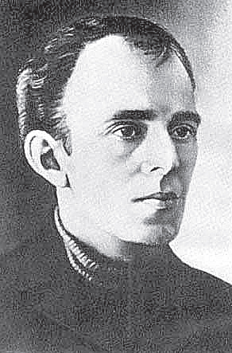
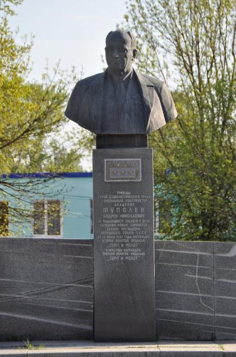
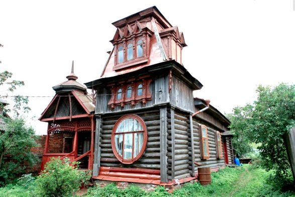
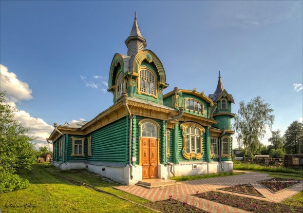
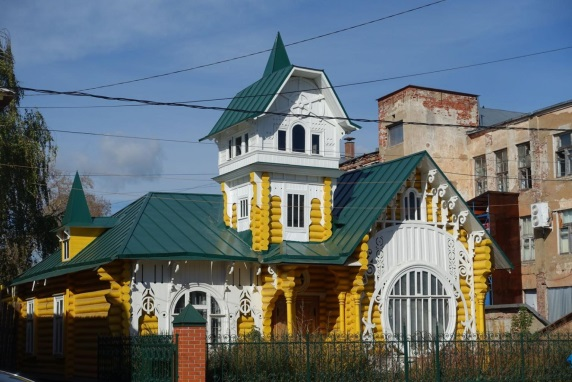
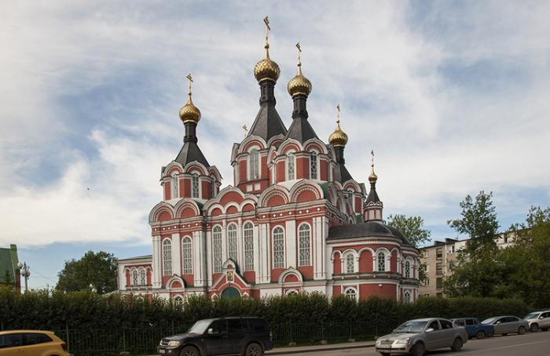
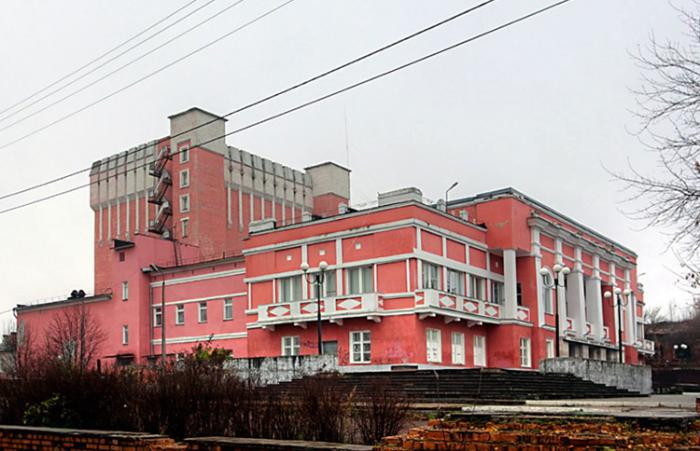
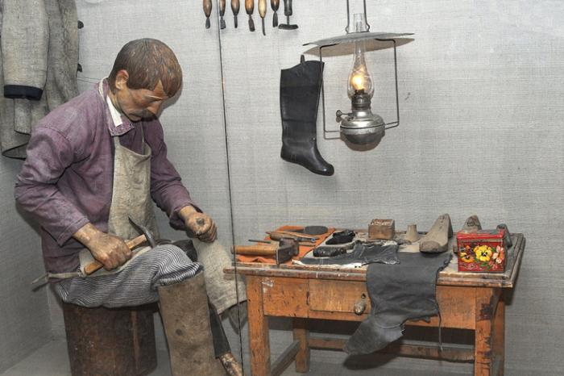

1 .Осип Эмильевич Мандельштам

О.Э. Мандельштам вместе с женой жил в Кимрах (Савёлово вошло в их состав в 1934 году), в 1937 году несколько месяцев. Ряд стихов получил название «Савёловский цикл». В них упоминается средоточие «изб с коньковыми верхами», «лубочные домики», благодаря которым Кимры неоднократно называли «столицей деревянного модерна»
В Кимры Мандельштамы прибыли не позднее 26 июня 1937 г. и поселились, арендовав дачу, на «низком» савёловском берегу вблизи железнодорожного полотна.
«Дом на углу и был тем самым, в котором жил поэт. Там, у дороги, стоял большой дом, но Мандельштамы снимали не его, а маленький, находящийся за ним, с зеленой крышей. Дом Чусовых». (Неопубликованный фрагмент беседы с Ю.Г. Стоговым). К сожалению, точного местоположения дома нет.
Мандельштамы покинули Кимры к ноябрю 1937 г.
2. Андрей Николаевич Туполев

Андрей Николаевич Туполев родился 10 ноября 1888 года в селе Пустомазово под городом Кимры Тверской губернии.
В 1906 году Андрей Туполев окончил гимназию в городе Тверь.
В 1908 году поступил в Императорское московское техническое училище (позже МВТУ). В 1910 году совершил первый полет на планере, в постройке которого участвовал.
1918 году Туполев с отличием окончил МВТУ и вместе с Жуковским стал организатором и одним из руководителей Центрального аэрогидродинамического института (ЦАГИ).
В 1923 году он создал свой первый лёгкий самолёт смешанной конструкции АНТ-1, Все следующие «АНТ»ы – дети А.Туполева. В 1956 году Андрей Туполев был назначен Генеральным конструктором авиационной промышленности СССР.
Андреем Туполевым было разработано свыше 100 типов самолетов, 70 из которых выпускались серийно. На его самолетах установлены 78 мировых рекордов, выполнены 28 уникальных перелетов, в том числе спасение экипажа парохода "Челюскин" на АНТ-4, беспосадочные перелеты в США через Северный полюс экипажей Валерия Чкалова и Михаила Громова на АНТ-25, высадка научных экспедиции "Северный полюс" во главе с Иваном Папаниным.
Большое число самолётов-бомбардировщиков, торпедоносцев, разведчиков конструкции Туполева применялось в боевых действиях в Великой Отечественной войне в 1941-1945 годах.
Андрей Туполев имел воинское звание генерал-полковника инженерно-технической службы, был избран действительным членом Академии наук СССР (1953), почетным членом Королевского общества аэронавтики Великобритании (1970) и Американского института аэронавтики и астронавтики (1971); ему были присуждены премия и золотая медаль имени Н. Е. Жуковского, Ленинская премия (1957), пять Государственных премий СССР (1943, 1948, 1949, 1952, 1972), высшая награда Международной авиационно-спортивной федерации (ФАИ),трижды было присвоено звание Героя Социалистического Труда (1945, 1957, 1972).Награжден восемью орденами Ленина, двумя орденами Трудового Красного Знамени, орденами Октябрьской Революции, Суворова 2-й степени, Отечественной войны 1-й степени, Красной Звезды, "Знак Почёта", медалями, а также иностранными орденами. Почетный гражданин Парижа (Франция), Нью-Йорка (США) и города Жуковский Московской области.
В городе Кимры Тверской области установлен бронзовый бюст Туполева. В 2005 году на месте дома-усадьбы Туполевых в Пустомазово открылась мемориальная композиция и установлен памятный камень.
3. Уникальная деревянная архитектура

Кимры – это настоящая сказка в руинах. Город – триумф деревянного зодчества. Пожалуй, ни в одном российском провинциальном городке вы не найдёте такого архитектурного роскошества. И модерн здесь - не излишество, не островки чужого, а собственный «взгляд» на красивую архитектуру.

К сожалению, удивительные и редкие памятники деревянного зодчества «погибают» на глазах местных жителей. Город лежит в развалинах. А ведь еще недавно Кимры были жемчужиной Золотого кольца.

4. Спасо-Преображенский собор.
Был построен в 1911 году. Автором проекта выступил российский архитектор Ф. Рыбинский. В советский период собор, как и большинство религиозных центров в те времена был закрыт, в его здании было размещено зернохранилище. В 1996 году собор был открыт вновь.

5. Кимрский драматический театр .
В городе Кимры в 1942 году талантливый русский режиссер А. М. Гиацинтов основал драматический театр, руководителем которого и стал. Первоначально труппа состояла всего лишь из девяти человек. За весь свой период существования в стенах театра было поставлено огромное количество разнообразных пьес и спектаклей, в которых играли талантливые актеры.

6. Кимрский краеведческий музей
Музей был создан в 1918 г. по инициативе местной кооперативной организации «Кредитсоюз». В этот период было положено начало комплектованию ценной коллекции обуви и материалов по истории обувного производства, поскольку Кимры считались столицей дешевой обуви. В 1926 г. произошла первая реорганизация, музей получил новое название «Кооперативный кустарно-производственный и сельскохозяйственный музей Кимрского «Сельпромсоюза».
